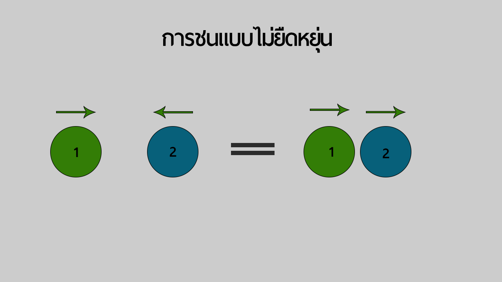

เป็นการชนระหว่างวัตถุ 2 ก้อนเเล้วทิศทางของวัตถุนั้นเคลื่อนที่ไปในทิศทางเดียวกัน ดังรูป

การชนแบบไม่ยืดหยุ่น
มีลักษณะคล้ายกับการชนเเบบยืดหยุ่น เเต่ต่างกันที่การชนแบบไม่ยืดหยุ่นจะมีพลังงานจลน์ไม่เท่ากัน
จึงสรุปได้ว่า การคำนวณหาความเร็วหรือมวลของ การชนแบบไม่ยืดหยุ่นสามารถใช้สูตรเดียวกับการชนแบบยืดหยุ่นได้
เเต่หากต้องการหาพลังงานจลน์ จะใช้สูตร ตามนี้
E
kสูญเสีย = E
kก่อนชน - E
kหลังชน
โดย E
kสูญเสีย คือพลังงานจลน์ที่สูญเสียไป
E
kก่อนชน คือพลังงานจลน์ก่อนชน มีสูตรว่า E
kก่อนชน =
1⁄
2 m
av
a2
E
kหลังชน คือพลังงานจลน์หลังชน มีสูตรว่า E
kหลังชน = [
ma⁄
(ma+mb)] E
kก่อนชน
ดูตัวอย่างโจทย์การคิด คลิ๊กข้อความนี้
กลับไปหน้าหลัก คลิ๊กข้อความนี้
การชนแบบยืดหยุ่น คลิ๊กข้อความนี้